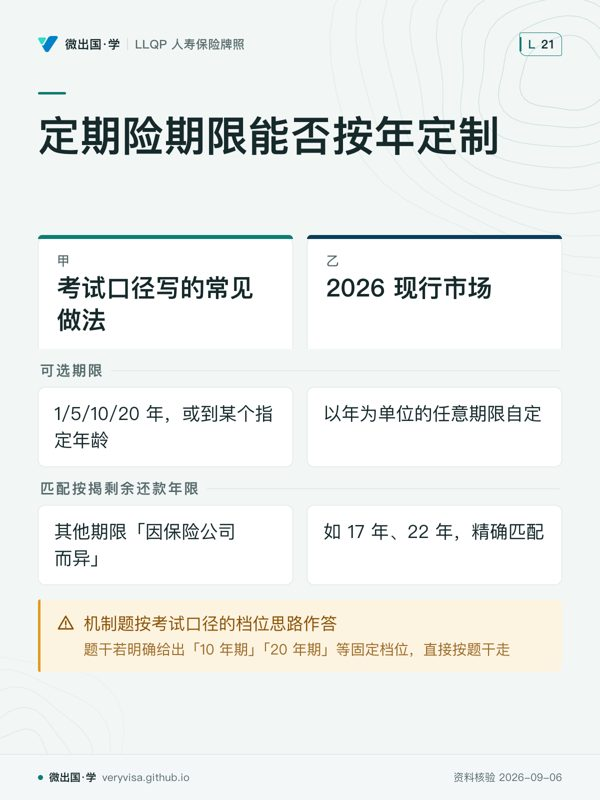

核实日期：2026-09-06｜本页「2026 市场」一节现行产品信息的出处：RBC Insurance 官网（RBC Insurance）、TD Insurance 官网（TD Insurance）、Canada Life 官网（Canada Life）、Canada Life 专页与 BMO 官网（canadalife.com、bmo.com）。 复核周期：2027-09-01。定期险的机制长青，但各保司的期限带宽、续保上限年龄、转换年龄上限每年可能微调，建议年度复查一次官网原文。
这一章解决什么问题
你要考的是 人寿保险模块，本篇对应 CISRO 能力组件 c2「分析可用产品」，占本模块权重 30%——定期寿险（term life insurance）是这一组件里最基础、也是需求分析中常见的产品形态，几乎每一份需求分析最后都会走到「用定期险还是永久险覆盖这段风险」这个岔路口。
这一篇讲的不是「定期险比永久险便宜」这句常识，而是一份定期险合同里真正决定它值不值的三个开关：续保权（renewability）能不能免核保、转换权（convertibility）能不能免核保转永久险、转换的价格算法是按现在的年龄还是按当年投保的年龄。这三个开关考试口径写了机制，但没写 2026 年市场上各家公司实际把开关设在哪个位置——而这恰恰是代理人被客户问到「我该选哪一家」时唯一答得上来的部分。
学完这一篇，你应该能做三件事：① 分清续保权与转换权是两项各自独立的合同权利，不是同一件事的两个说法；② 给出任意一份定期险的转换时间点，判断适用现龄转换还是原龄转换、以及不可抗辩期与自杀除外条款要不要重新起算；③ 说出至少三家保司 2026 年的定期险产品线名字、期限带宽与转换年龄上限，知道考试口径写的「常见期限 1/5/10/20 年」在今天的市场上已经不是产品设计的天花板。
一、制度设计与底层逻辑：为什么定期险的合同条款比它的名字复杂得多
1. 它承保的是一段被截断的死亡风险
定期寿险（term life insurance）的合同结构非常单纯：投保人（policyholder）交固定保费，保险公司承诺——如果被保险人（life insured）在约定的期限（term）内身故，就支付一笔身故给付（death benefit）；期限一到，合同自然终止，此前从未有理赔就没有任何退还，这与终身寿险持续累积现金价值（cash value）的设计截然不同。
由此产生第一条底层逻辑：定期险卖的不是「保障」这个抽象概念，卖的是「保障恰好覆盖某一段已知或可估算的时间窗口」。这段窗口可能是一笔按揭贷款的剩余年限、子女成年前的抚养期、一笔有明确到期日的商业贷款，也可能就是投保人自己设定的一段收入高峰期。考试口径举的按揭配对场景——两位共同借款人投保联合首身故（joint first-to-die）定期险覆盖同一笔按揭——正是这条逻辑最典型的落地：任一人先身故即赔一次，本例只约定一份保额、赔一次；与两张个人单的保障总额及报价须分别比较，因为保险公司只承担「赔一次」的风险，这是共保结构本身省下的钱，不是打折。
投保人（policyholder）与被保险人（life insured）也未必是同一人：企业为员工投保、父母为子女投保，都是投保人拥有合同约定的权利，但变更、解约或转让仍可能受不可撤销受益人、质押及法院命令限制而被保险人只是身故触发理赔的那个人。这条区分在定期险里同样成立，只是因为定期险常见于个人自购场景，容易被误以为两者永远是同一个人。
2. 谁与谁在博弈：保险公司为什么把「免核保」当成一项要单独定价的权利
定期险的期限一到，如果投保人身体状况变差，正常逻辑是保险公司应该趁机重新核保、按新的健康状况定价——这对保险公司最有利。但市场竞争迫使保险公司提供续保权（renewability）：到期免核保自动续保，只是保费按续保时的年龄重新计算。这项权利对保险公司而言是纯风险敞口——它必须继续承保一个可能已经生病的人，所以可续保定期险的保费天然高于不可续保定期险。
转换权（convertibility）解决的是另一个完全不同的问题：客户在年轻、保费便宜时买了定期险，但迟早会需要永久保障（遗产规划、企业买卖协议、无法再通过核保买新单的年龄）。可转换定期险（convertible term）允许投保人在约定的年龄上限之前，免核保把定期险转换成永久险（终身险、T-100 或万能寿险）。这项权利同样是保险公司让渡给投保人的一项风险敞口——保险公司承担的是「客户健康转差后仍然接手永久保障」的风险。
ℹ️
续保权与转换权是两件独立的事，不是同一权利的两种说法
一份定期险可以只有续保权没有转换权，也可以只有转换权没有续保权，更多情况下两项权利都写进同一份合同（可续可转，renewable and convertible term）。判断题干时先问「它问的是到期后继续买定期险，还是到期后换成永久险」，这是两个完全不同的机制，各自有各自的年龄上限。
3. 法律后果：转换不是重新投保，而是原合同权利的延续
这一点是本章最容易被忽视、也最常被考的机制：行使转换权时，保险公司不得要求任何新的可保性证明（proof of insurability），这不是「保险公司愿意通融」，而是合同签发时就已经写进条款的一项确定权利，客户健康状况在这段时间内的任何变化都不影响转换的成立。同时，转换后的永久险合同沿用原定期险合同的签发日期来起算不可抗辩期（incontestability period）与自杀除外条款（suicide exclusion clause）的时钟——如果原定期险已经过了两年，转换后的永久险不会重新进入两年不可抗辩期；如果原定期险还在两年窗口内，剩余的时间会带入新合同继续计算，不会因为「换了一份新合同」就从零重新起算。
✕
把「转换」误当成「退旧买新」是执业事故
一旦把转换权处理成退保后重新投保一份永久险，客户就会被要求重新核保、重新起算两年不可抗辩期与自杀除外期——这直接剥夺了客户当初买可转换定期险所付的那部分溢价想要买到的东西。转换权的价值全部在于免核保 + 时钟不清零这两点,一旦操作错误，两点都会落空。
二、2026 现行政策与数字：期限、续保定价与转换的两种算法
1. 期限本身不是法律规定的，是行业惯例
考试口径列出的常见期限——1 年、5 年、10 年、20 年，或到某个指定年龄（如到 60 岁）——从来不是法律或监管规定的清单，只是保险公司过去几十年沿用的行业惯例分档。这一点在第四节「2026 市场」会看到直接冲击：现在多家主流保司已经不再把客户限制在这几个固定档位里。
2. 续保定价：保证费率续保 vs 重新核保续保
续保条款（renewal provisions）在实务中分两条路：保证费率续保（renewable with guaranteed rates）——签发时就把整张续保费率表写进合同，客户到期直接按表上的年龄对应费率续保，无论健康状况如何都不受影响；重新核保续保（re-entry term）——到期时如果客户重新提交健康声明并通过核保，可以按更低的「重新核保费率表」续保，健康状况变差或拒绝重新核保的，仍然可以按保证费率表续保，不会被拒绝，只是费率更高。这条设计对客户永远是单向保护：重新核保只能让费率变得更便宜，不会让已经拥有的续保权利消失。
3. 转换的两种定价算法：现龄转换 vs 原龄转换
这是本章计算量最大的一个机制，也是考试口径原龄转换（original-age conversion）案例的核心：
现龄转换（attained-age conversion）：转换时的永久险保费按被保险人转换那一刻的年龄计算——年龄越大，永久险保费越贵，但转换当下不需要额外补一笔钱，是市场上绝大多数保单的默认设计。
原龄转换（original-age conversion，也称追溯转换 retroactive conversion）：转换后的永久险保费按被保险人最初投保定期险时的年龄计算——这个年龄更年轻，永久险保费自然更低，但保险公司会要求投保人一次性补缴一笔差价，算法因保单而异：可能是「假设投保人从一开始就买永久险、这些年应缴保费与实际已缴定期险保费之间的差额」，也可能是「假设从一开始买永久险到现在应该累积的现金价值」。无论哪种算法，这笔一次性补缴金额都可能相当可观——可否采用原龄转换、允许的年限及补款方式均按合同；Canada Life 现行页仍列此选项。应把补款、利息和未来保费合并比较，不能只凭低龄费率判断划算。
⚠️
「原龄转换保费更低」不等于「原龄转换更划算」
原龄转换的永久险保费确实更低，但换来这份低保费的代价是一笔可能很大的一次性补缴款，而且原龄可转换定期险本身在投保之初的定期险保费，就已经比现龄可转换定期险更贵——保险公司承担了「未来可能要按更低费率提供终身保障」的风险，这份风险从一开始就体现在保费里了。选项设计里常见的陷阱是只比较转换后的永久险保费高低，而不考虑补缴款与前期溢价，三笔账合在一起看，原龄转换未必是划算的选择。
三列双口径表之一：考试口径的固定期限档位 vs 2026 现行的按年定制
| 考试口径写的常见做法 | 2026 现行市场 | 考场答·柜台做 | |
|---|---|---|---|
| 定期险的期限档位 | 常见期限为 1/5/10/20 年，或到某个指定年龄（如 60 岁），其他期限「因保险公司而异」 | 多家主流保司（见第四节）已提供以年为单位的任意期限自定，如 17 年、22 年，精确匹配某一笔按揭的剩余还款年限 | 考场：机制题按考试口径的档位思路作答，题干若明确给出「10 年期」「20 年期」等固定档位，直接按题干走；柜台：向客户报价前先问清楚具体的负债年限，不要预设客户只能在 10/20 年之间二选一 |
三、实务流程：从选期限到行使转换权，代理人在每一步做什么
1. 需求分析阶段：把「已知的时间窗口」量出来，而不是先选产品
代理人的第一步工作不是问客户「你要 10 年还是 20 年」，而是先量出客户面对的风险到底会持续多久：一笔按揭还有多少年还清、子女到独立生活还有多少年、一份有明确到期日的商业贷款还剩几年。量出这个数字之后，才回头去匹配市场上现有的期限选项——如果某家保司只提供固定档位而客户的实际需求是 17 年，代理人就要在「多付几年保费换标准档位」与「转去提供按年定制的保司」之间给出建议，这正是第四节要落到实务的地方。
2. 保额形态的选择：跟着风险的形状走，不是跟着习惯走
死亡给付（death benefit）在定期险里有三种形态：平额（level）——保额从头到尾不变，最常见，适合抚养费、遗产规划等不随时间递减的需求；递减（decreasing）——保额随时间下降，最常见的应用就是覆盖一笔按揭贷款，因为按揭余额本身逐年下降，用递减定期险覆盖比平额定期险更省保费；递增（increasing）——保额随时间上升，用于覆盖会随通胀或收入增长而扩大的责任缺口，这类产品在加拿大市场并不常见，代理人遇到这类需求时通常改用附加险（rider）或分批追加平额保单来实现类似效果。
🔧
按揭寿险要分清保额、保费和受益人
FCAC 说明：按揭寿险通常随贷款余额减少而减少保额，保费却一般保持不变，赔款付给贷款人（canada.ca）。个人平额定期险则可由保单持有人选择保额与受益人，受益人可把款项用于还贷或其他需要。两者均须核承保条件、除外责任和终止条款；不能一概说银行只在理赔时核保，也不能把个人“递减”险说成保额固定。
3. 转换权的行使窗口：客户一提离职、体检异常，当天就要核
转换权最大的价值在于免核保，所以它最该被用在客户健康状况开始变差、或即将失去核保资格的那一刻——而不是等到转换年龄上限快到了才想起来。代理人在日常维护客户关系时，一旦听到客户提及新诊断、家族病史变化，第一反应应该是核对这份定期险的转换权还剩多少年、行使窗口是否临近，而不是等客户自己想起来问。
三列双口径表之二：转换年龄上限，考试口径的通则 vs 各公司的具体年龄
| 考试口径通则怎么说 | 2026 各公司现行值 | 考场答·柜台做 | |
|---|---|---|---|
| 转换权年龄上限 | 考试口径以案例说明「合同允许在最高某个年龄之前随时转换」，不给全国统一数字，因保险公司而异 | RBC YourTerm：71 岁生日前（RBC Insurance）；TD：69 岁生日后 6 个月内（TD Insurance）；Canada Life My Term：官网列至 70 岁（canadalife.com）；具体截止日依所持合同 | 考场：题干会直接给出某家公司或某份合同的具体年龄，按题干数字算，不要套用任何一家的现行年龄当「标准答案」；柜台：报价与维护客户时必须查该客户实际持有保单的合同条款，考试口径与本页任何一个具体年龄都不能替代读原合同 |
四、2026 市场：谁在卖、产品叫什么、柜台怎么说
本节只写已回源核实的产品线，promo 折扣价格不写，只写机制与条款。
1. RBC Insurance —— YourTerm：把「按年定制」做成产品名的卖点
RBC 官网确认的定期险产品线是 RBC YourTerm（另有面向小额度、简化承保场景的 RBC Simplified Term）。YourTerm 明确写出可以「选择 10、15、20 或 40 年（以及两者之间的任意年数）」，转换为永久险或万能寿险的年龄上限是71 岁生日前、免核保，期满后可自动续保直至被保险人100 岁（RBC Insurance）。
它解决考试口径里哪个概念：它直接打破了考试口径「常见期限 1/5/10/20 年」的档位假设——YourTerm 把「精确匹配一笔按揭剩余还款年限」从代理人手工凑档位的动作，变成了产品说明书上明写的卖点。
2. TD Insurance —— 三档固定期限，且官网数字更正了一处二手源的误差
TD 官网提供三档固定期限：10 年、20 年、30 年定期险，加上 Term 100 永久险选项；三档定期险的保障最迟都在被保险人80 岁终止；转换为 Term 100 永久险的窗口是69 岁生日后 6 个月内（TD Insurance）。
它解决考试口径里哪个概念：TD 是考试口径描述的「固定档位」思路在 2026 年市场上的活样本，用来和 RBC 的「按年定制」形成直接对照。TD 的窗口是 69 岁生日后 6 个月内，不能约写成 70 岁；购买或转换时须以合同精确截止日为准。
3. Canada Life —— My Term：首期固定，期满后逐年续保
Canada Life 官网确认 My Term™ 可选择 5–50 年首期；在不变更保单的前提下，首期保费固定。首期期满后才逐年自动续保、保费每年增加，至最接近 85 岁生日的保单周年日。官方页同时列出至 70 岁转永久险，以及符合条件的原龄转换（须补保费差额和利息）；具体资格及截止日须查合同（canadalife.com）。

它说明“首期保费”与“期满续保费率”是两段安排。比较产品时应把两段保证费率表分别拿出来，既不要把续保涨价说成首期年年涨，也不要以为首期固定就代表终身固定。
4. BMO Insurance —— 有续保选项，仍有保障终止年龄
BMO 的 Term Life 官方页列出 10、15、20、25、30 年期及续保选项，保障于 85 岁终止；脚注另列 71 岁前转换合资格永久险的权利（bmo.com）。续保权与保障终止年龄可以同时存在，不能把最终到期误解为从一开始就无续保权。
Assumption Life 的 FlexTerm 2022 年官方公告曾列续保至 90 岁、转换至 75 岁；本页未取得现行签发合同，因此不把历史公告数值列作 2026 报价条件。需要该产品时，先向保险人取得当前产品说明和适用合同。
ℹ️
产品示例的适用范围
当前产品页不自动适用于历史签发保单。报价、转换和续保前应取得所持保单版本及书面费率表；未列产品与促销费率不作比较。
五、历史变革：从「固定几档」到「按年定制」，变的是什么
| 时期 | 变了什么 | 为什么改 | 对读者的意义 |
|---|---|---|---|
| 传统做法（考试口径基准叙事） | 保险公司提供少数几个固定档位（1/5/10/20 年或到某指定年龄），客户从中挑一个最接近的 | 精算与产品管理在几十年前更依赖标准化的期限档位定价表，逐年定制在系统上成本更高 | 「常见期限」这条考试口径表述本身没有说错，只是没有说明它是行业惯例而非法律要求 |
| 线上比价与经纪平台兴起（近十年） | PolicyAdvisor、HelloSafe 等比价平台把多家保司的报价并排展示，价格透明度显著提升 | 消费者能在几分钟内比较多家保司同一保额、同一期限的报价，倒逼保司在期限灵活度上竞争 | 代理人的专业价值从「帮客户找到报价」转向「帮客户判断该选哪家、该配多少年」 |
| 现在（2026 市场） | RBC、Beneva 等公司把「以年为单位任意自定期限」做成官网明写的产品卖点，不再局限于固定档位 | 精算系统与定价引擎的自动化程度提高，逐年定制的边际成本大幅下降，且能更精确匹配客户的真实负债年限，减少「多买几年保费」的浪费 | 考试口径「常见期限 1/5/10/20 年」这句表述在 2026 年已经不是产品设计的天花板，代理人应主动了解自己代理的保司是否提供按年定制 |
| 长期不变的部分 | 续保权与转换权作为两项独立权利、转换沿用原合同签发日期起算不可抗辩期与自杀除外条款——这两条机制自考试口径定稿至今没有变化 | 这是合同法与保险法层面的既定原则，不随各家产品设计的创新而改变 | 无论产品名字与期限带宽怎么变，判断题干时先回到这两条不变的机制上 |
六、案例：三个 BC 场景
案例一：素里的 Marcus 想用一张保单精确覆盖 17 年的按揭（示例）
情景：Marcus 在素里刚办了一笔按揭，剩余还款年限精确算下来是 17 年。他咨询了一家只提供 10 年、20 年两档定期险的保司，代理人建议他买 20 年期以「留有余量」。
适用规则：20 年期比 17 年期每年多付三年的保费，这笔多付的保费本可以完全避免——按年定制的定期险产品（如 RBC YourTerm）允许精确按 17 年投保，不需要在「10 年不够、20 年多余」之间二选一。
结果：如果 Marcus 的代理人所在的保司恰好也提供按年定制，应直接推荐 17 年期；如果不提供，代理人有责任告知客户市场上存在更精确匹配的选项，由客户自己权衡是否值得换一家保司投保。
常见错法：把「只提供固定档位」当成整个市场的现状，想当然地推荐「就近取整、宁多勿少」，而不主动了解市场上是否有更贴合客户实际需求的产品线。
案例二：温哥华的 Priya 三年前买了可转换定期险，现在查出甲状腺结节（示例）
情景：Priya 三年前购买一份 10 年期可转换定期险，转换权窗口是投保人 65 岁前。她今年体检查出甲状腺结节，医生建议进一步检查，她担心以后买不到新的保险。
适用规则：只要 Priya 现在选择行使转换权，把这份定期险转换成永久险，保险公司不得因为她今年的体检结果要求任何新的可保性证明——转换权的核保豁免与她现在的健康状况无关，只与「她是否在窗口期内提出转换」有关。她不需要等到确诊或病情恶化才行动，越早行使转换权，越不会被「以后可能核保更严格」的顾虑绑住。
结果：Priya 应尽快联系代理人行使转换权，把定期险转换为永久险；这个动作与她的体检结果、医生的进一步检查安排都无关，也不需要等检查结果出来再决定。
常见错法：以为转换权像新投保一样，要等身体状况「确认没问题」才能顺利转换——恰恰相反，转换权存在的意义就是让客户不必依赖「身体没问题」这个前提。
案例三：列治文的 David 想知道离婚后能不能把定期险转给现在的伴侣（示例）
情景：David 五年前为当时的配偶购买了一份联合首身故（joint first-to-die）定期险覆盖共同房贷，两人已离婚，David 想知道这份保单现在算谁的、能不能把受益人换成现在的伴侣。
适用规则：联合首身故保单以两人的生命为承保对象，离婚不会自动终止这份保单，但保单的受益人指定与投保人身份是独立于婚姻状态的两件事——具体能不能变更受益人、能否在双方仍在世时按合同分拆保障或另为新伴侣投保，取决于保单本身的条款设计与投保人身份，而不是简单地因为「离婚了」就自动调整。
结果：David 需要先确认自己在这份保单里是不是投保人，以及是否受不可撤销受益人、质押或家庭法院命令限制，再决定下一步；如果他不是投保人（例如当初是前配偶名下投保），他对这份保单没有变更权，需要考虑重新为自己和新伴侣单独投保。
常见错法：把「联合首身故」理解成两人共同拥有、共同决定的保单，忽略了投保人身份才是决定谁能变更保单条款的关键，这一点和婚姻关系的变化是两条并行但不互相决定的线。
七、考试陷阱与双口径清单
陷阱一：把续保权与转换权当成同一件事。 识别——续保是「到期免核保继续买一份定期险」，转换是「到期前免核保换成一份永久险」，题干里出现「到期后…」通常在问续保，出现「换成终身险/万能寿险」通常在问转换，两者的年龄上限、费率算法完全独立，不能互相替代作答。
陷阱二：认为原龄转换永远比现龄转换划算。 识别——原龄转换的永久险保费更低，但需要一次性补缴一笔可能很大的差价，且原龄可转换定期险本身在投保时的保费就比现龄可转换定期险更贵，三笔账合在一起看才能判断是否划算，只看转换后保费高低是不完整的比较。
陷阱三：以为转换会重新起算不可抗辩期与自杀除外条款。 识别——转换沿用原定期险合同的签发日期起算这两项条款的时钟，不会因为换成永久险合同就清零重新算两年，题干若问「转换后多久内保险公司还能因重大事实错误撤单」，要看的是原合同的签发日期，不是转换发生的日期。
陷阱四：把递减定期险当成保费不变的产品。 识别——递减定期险的保额随时间下降，保费通常在合同期内保持不变（不是保额和保费同步下降），因为保险公司在定价时已经把整段期限内平均的风险敞口算进了固定保费里；题干若问「递减定期险的保费会不会跟着保额一起下降」，多数常规产品设计的答案是不会。
陷阱五：把「因保险公司而异」当成考试口径没讲清楚，而不是一个需要另外核实的现行事实。 识别——考试口径明确说明期限档位、转换年龄「因保险公司而异」，这不是考试口径的疏漏，而是提示读者这类数字必须回具体保司当前的产品条款核实，不能背一个全国统一的数字；本页列出的 TD 69 岁后 6 个月、RBC 71 岁前、Canada Life 至 70 岁等窗口属于各自产品条件，不能互换使用。
陷阱六：把银行推销的按揭险等同于个人定期险。 识别——贷款人销售的按揭寿险通常按剩余贷款债务给付，承保问卷、转贷和终止条件须查保险证书；题干如果问「与个人递减定期险相比，银行按揭险的受益人是谁、保障是否可携带」，正确方向是银行按揭险受益人固定为银行且不可携带，这与个人保单的可携带性、受益人可自定完全不同。
双口径清单（考场答什么 / 柜台做什么）
| 判据 | 考场答 | 柜台做 |
|---|---|---|
| 定期险常见期限 | 按考试口径举例的 1/5/10/20 年或题干给定的具体档位作答 | 先量出客户真实的负债年限，再判断是否需要一家提供按年定制的保司 |
| 转换年龄上限 | 按题干给出的具体合同数字作答，不套用任何一家 2026 现行值当通用答案 | 查该客户实际保单的合同条款，本页任何公司的年龄数字都不能替代读原合同 |
| 转换是否重新核保、时钟是否清零 | 免核保、时钟沿用原签发日期，这条机制是长青考点 | 客户体检异常或健康转差时，第一时间核对转换权窗口是否临近，主动建议尽快行使 |
| 原龄转换 vs 现龄转换 | 现龄转换是市场默认设计，原龄转换须按合同补缴差额及可能的利息，不能推定已停售 | 报价与讲解时把补缴款、前期溢价一并展示给客户，不只比较转换后的保费 |
| 银行按揭险 vs 个人定期险 | 机制辨析题按考试口径「团体递减定期险」定性作答 | 客户办按揭时主动提示两者差异，帮客户判断是否值得转投个人定期险 |
本节对应的练习题共 52，按三层难度分布：概念辨析（第一层）、考试口径通则与 2026 现行值双口径及机制计算（第二层）、跨情景综合判断（第三层）。
术语双语对照表
| English | 中文 | 一句机制 |
|---|---|---|
| Term life insurance | 定期寿险 | 只在约定期限内提供身故保障，期满未理赔无任何退还 |
| Policyholder | 投保人（保单持有人） | 依合同与法律行使保单权利，未必是被保险人 |
| Life insured | 被保险人 | 保单以其生命为标的，其身故触发理赔 |
| Death benefit | 身故给付 | 被保险人在期限内身故时支付的一次性金额 |
| Joint first-to-die | 联合首身故 | 两人以上共保一份保额，任一人先身故即赔一次，常用于共同房贷 |
| Joint last-to-die | 联合末身故 | 最后一人身故才赔，常用于覆盖配偶间递延的身故税负 |
| Level term | 平额定期险 | 保额从投保到期满始终不变 |
| Decreasing term | 递减定期险 | 保额随时间下降，保费通常不变，常用于覆盖按揭 |
| Increasing term | 递增定期险 | 保额随时间上升，加拿大市场较少见，常改用附加险实现类似效果 |
| Renewability | 续保权 | 期满免核保继续购买一份定期险的合同权利，保费按续保时年龄重新计算 |
| Renewable with guaranteed rates | 保证费率续保 | 签发时已写入整张续保费率表，健康状况不影响续保费率 |
| Re-entry term | 重新核保续保 | 续保时重新申报健康可享更低费率，拒绝或核保不过仍可按保证费率续保 |
| Convertibility | 转换权 | 在约定年龄上限前免核保把定期险换成永久险的合同权利 |
| Attained-age conversion | 现龄转换 | 永久险保费按转换那一刻的年龄计算，市场默认设计 |
| Original-age conversion / retroactive conversion | 原龄转换 / 追溯转换 | 永久险保费按最初投保年龄计算，需一次性补缴差价 |
| Incontestability period | 不可抗辩期 | 签发后两年内保险公司可因重大事实错误撤单，转换不重新起算 |
| Suicide exclusion clause | 自杀除外条款 | 生效后通常两年内自杀不赔，转换沿用原合同起算时间 |
| Material fact | 重大事实 | 若如实告知会影响核保决定的信息 |
| Rider | 附加险 | 依附主险购买的附加保障，常用于实现主险条款以外的需求（如递增保障） |
| Buy term and invest the difference | 买定期＋差额自行投资 | 定期险省下的保费差额自行投资积累财富的策略，依赖投保人自律与市场表现 |
本页知识卡
不看正文也能拿到这一节的核心内容：先看导读，再看图。点图放大，左右翻页。
- 先看先看年龄基准，再看补缴款；低龄费率不能单独判断划算。
- 易漏原龄可转换定期险在投保之初的定期险保费就已经比现龄更贵。
- 下一步去练习，把补款、利息和未来保费合并比较。

- 先看先看按揭剩余年限这一行，它最能说明按年自定的用途。
- 易漏现行市场的任意期限不改变机制题的答法；题干明确年期时直接按题干走。
- 下一步去练习，遇到期限题先分清考场与柜台。